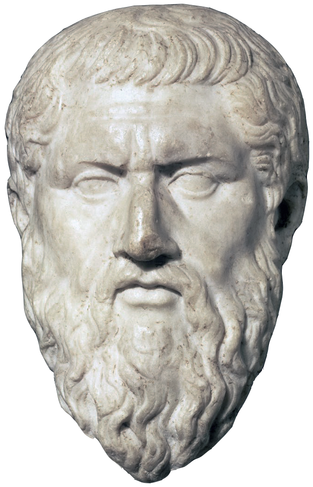
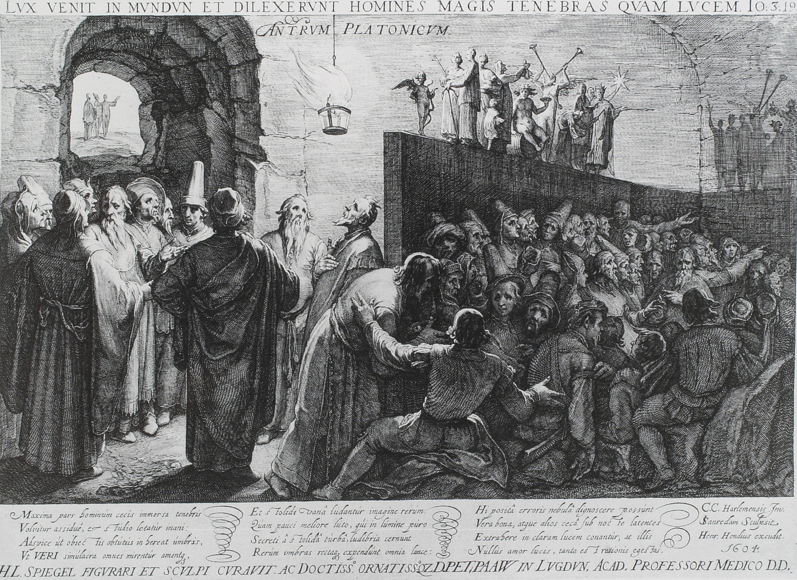

Tema 3 · Platón de Atenas
Para entrar en Platón
Con Platón (h. 427-h. 347 a. e. c.) cambia la escala de lo que vamos a leer. Hasta aquí hemos recogido ideas sueltas, fragmentos, posiciones; ahora, por primera vez, nos encontramos con un sistema: una explicación de conjunto en la que la realidad, el conocimiento, el alma, la virtud y la política se sostienen unas a otras. Por eso le dedicamos un tema entero, y por eso conviene ver el mapa antes de entrar en el detalle.
Un autor, un sistema. La pieza que todo lo articula es una distinción que quizá ya conozcas de oídas: la que separa las cosas que vemos de las Formas que las hacen ser lo que son. De ella nace lo demás. Si hay dos planos de realidad, habrá dos formas de acceder a ellos —dos grados de conocimiento (§10)—; si el ser humano puede conocer las Formas, su alma tendrá algo de esa naturaleza superior (§11); si el alma tiene partes, habrá una virtud para cada una (§12); y si la virtud ordena el alma, otro tanto debe ordenar la ciudad (§13). Un mismo patrón recorre el sistema de arriba abajo, y Platón lo hace explícito en un paralelo famoso: el alma justa y la ciudad justa tienen la misma estructura. Quien entiende ese paralelo entiende a Platón.
Vida y circunstancia. Nada de esto se piensa en el vacío. Platón es un aristócrata ateniense de una ciudad que acaba de perder la guerra del Peloponeso y vive años de inestabilidad y violencia política. Estaba llamado a gobernar, y de la política se apartó. La causa tiene nombre: la condena y muerte de su maestro Sócrates (h. 470-399 a. e. c.), ejecutado por la propia democracia ateniense en el 399. Que la ciudad matara al hombre más justo que conocía dejó en Platón una herida y una pregunta que ya no lo abandonarían: ¿quién debe gobernar, y cómo se le forma?
La Academia. Desengañado de la política de su tiempo, Platón fundó hacia el 387 a. e. c. la Academia, en un bosque a las afueras de Atenas consagrado al héroe Academo; de ahí su nombre, y de ahí proceden nuestras palabras «academia» y «académico». No fue una escuela cualquiera. Suele considerarse la primera institución de enseñanza superior de Occidente: una comunidad estable y duradera, con biblioteca y vida propia, dedicada a investigar y enseñar matemáticas, dialéctica y filosofía —el saber por el saber, no la oratoria útil que vendían los sofistas—1. La Academia sobrevivió a su fundador cerca de tres siglos —hasta que el saqueo de Atenas por el general romano Sila, en el 86 a. e. c., la dispersó—, y fue el vivero del que salió, entre otros muchos, Aristóteles, que estudió en ella unos veinte años antes de fundar la suya. Su modelo —reunir a maestros y discípulos en una institución dedicada al conocimiento— dejó una huella larga en toda la historia de la educación, hasta nuestras universidades.
La forma del diálogo. Un último aviso de lectura. Platón no escribió tratados, sino diálogos: conversaciones, casi siempre con Sócrates de protagonista, en las que las ideas se buscan, se discuten y a veces se quedan sin cerrar. Es pensamiento en movimiento, no doctrina dictada. Nosotros nos apoyaremos sobre todo en sus obras de madurez —en especial la República—, donde el sistema aparece ya formado.
Empecemos, pues, por el cimiento sobre el que se levanta todo el edificio: su teoría de la realidad.

§09 · Platón: la realidad — la teoría de las Formas y el Bien
Dibuja un círculo en un papel. Por cuidadoso que seas, ninguna circunferencia que tracemos será un círculo perfecto: siempre habrá un punto algo más cerca del centro que otro, un trazo algo más grueso, un mínimo temblor del pulso. Y, sin embargo, cuando un matemático demuestra un teorema sobre «el círculo», no habla de ninguno de esos dibujos defectuosos, sino de algo que ninguno de ellos llega a ser del todo. ¿De qué habla, entonces? ¿Dónde está ese círculo perfecto del que todos los dibujados son copias fallidas?
A esa pregunta —y a otras parecidas sobre la justicia, la belleza o el bien— responde Platón con la tesis más influyente de toda su obra: existe una realidad verdadera, eterna e inmutable, distinta del mundo que vemos y tocamos. La llamó el mundo de las Formas. Esta sección explica qué son las Formas, por qué Platón se ve obligado a postularlas y por qué, en su cumbre, sitúa una Forma que ordena y da sentido a todas las demás: la Forma del Bien.
La herencia de Sócrates: la busca de definiciones. Platón no parte de cero; recoge un problema que le dejó su maestro. Sócrates recorría Atenas preguntando «¿qué es la valentía?», «¿qué es la justicia?» —lo vimos en §06—, y rechazaba como respuesta la lista de ejemplos: no quería casos de actos valientes, sino aquello común a todos ellos que los hace valientes, lo que valdría para cualquier caso, en cualquier tiempo y lugar. A eso apuntaba la definición socrática: a un universal estable. Pero Sócrates buscó esos universales sin decir nunca dónde están ni qué clase de realidad tienen. Platón dará el paso que su maestro no dio.
La herencia de los presocráticos: el flujo y el ser. El segundo hilo viene de antes. Heráclito había enseñado que todo fluye —pánta rhei, §03—: las cosas sensibles nacen, cambian y perecen sin descanso, de modo que nada de lo que percibimos permanece idéntico a sí mismo ni un instante. Parménides, en cambio, había sostenido que del verdadero ser solo cabe decir que es: uno, inmóvil, eterno (§03). Platón no elige entre ambos: los reparte. El mundo sensible es heraclíteo, puro cambio, y por eso de él solo puede haber opinión. Pero el conocimiento verdadero, la ciencia, exige un objeto parmenídeo: algo fijo, sobre lo que de verdad se pueda saber. Si ese objeto no está en el mundo que cambia, tiene que estar en otra parte.
Qué es una Forma —y por qué no la llamamos «Idea». Esa «otra parte» es el mundo de las Formas. Y aquí hay que desactivar de entrada un falso amigo. La palabra de Platón es idéa o eîdos —«forma», «aspecto», «aquello que se muestra a la mirada»—, y la tradición la tradujo por «Idea». Pero «idea» significa hoy en castellano un contenido mental: un pensamiento, un concepto que tienes en la cabeza. Y eso es justo lo contrario de lo que Platón quiere decir. Para evitar el equívoco, en este manual las llamaremos Formas2. Una Forma no es una abstracción que tu mente fabrique a partir de las cosas; es una realidad que subsiste por sí misma, exista o no alguien que la piense. Las cosas no inventan las Formas: las Formas son anteriores, y las cosas las copian.
Reúne, en concreto, estos rasgos —conviene tenerlos juntos—:
- Subsistentes. Existen por sí mismas, fuera de la mente y fuera de las cosas; no son ni pensamientos nuestros ni propiedades pegadas a los objetos.
- Universales. Cada Forma corresponde a una clase entera: la Belleza, no esta o aquella cosa bella.
- Únicas. Hay una sola Forma por clase; frente a los muchos particulares, el modelo es uno.
- Inmutables y eternas. No nacen, no cambian, no perecen: están al margen del tiempo.
- Perfectas. Son el modelo acabado que las cosas sensibles solo imitan, sin alcanzarlo nunca.
- Inteligibles, no sensibles. No se ven ni se tocan, no tienen extensión ni color; solo la inteligencia las capta.
- Causa y modelo de lo real. Una cosa es lo que es —bella, justa, igual— porque participa de su Forma; las Formas son el patrón según el cual hay un mundo ordenado.
Dos mundos: el sensible y el inteligible. De aquí sale la imagen por la que se conoce a Platón: la de los dos mundos. Está el mundo sensible, el de las cosas múltiples, cambiantes y perecederas que captamos con los sentidos; y está el mundo inteligible, el de las Formas, que captamos con la inteligencia. Las cosas del primero son copias imperfectas de las del segundo, como los círculos dibujados respecto del círculo perfecto. Platón marca entre ambos una separación tajante, un chōrismós: las Formas no están «dentro» de las cosas como una propiedad más, sino que subsisten en un plano propio3.
Cómo se relacionan las cosas y las Formas. Pero, si están separados, ¿qué une los dos mundos? ¿Por qué esta rosa es bella? Platón ensaya varias respuestas, más imágenes que doctrina cerrada: la cosa participa de la Forma (méthexis), la imita (mímesis), o la Forma está de algún modo presente en ella. En los tres casos la dirección es la misma: la cosa sensible es lo que es —bella, justa, igual— porque remite a una Forma que ella no agota. La copia debe su ser al modelo. Que esa relación es difícil de pensar lo sabía el propio Platón, que la sometió a crítica años después4.
Una jerarquía coronada por el Bien. Las Formas no forman un montón inconexo. Se ordenan: las más amplias abarcan a las más particulares, y todas se articulan en una jerarquía. Y esa jerarquía tiene una cumbre. Por encima de todas, Platón sitúa la Forma del Bien: no una Forma más entre las demás, sino el principio que las hace a la vez valiosas e inteligibles, lo que da unidad y sentido al mundo inteligible entero. Conocer de verdad, para Platón, es ascender hasta el Bien.
El símil del sol. El Bien es tan elevado que Platón confiesa no poder describirlo de frente, y recurre a una comparación célebre, en el libro VI de la República: el Bien es, en el mundo inteligible, lo que el sol en el visible. El sol hace dos cosas. Primero, da la luz por la que los ojos ven y las cosas se vuelven visibles; del mismo modo, el Bien es la luz por la que la inteligencia conoce y las Formas se vuelven inteligibles. Pero el sol hace algo más: con su calor, hace que las cosas nazcan y crezcan. También aquí el paralelo se sostiene: el Bien no solo da inteligibilidad a las Formas, sino que es causa de su ser y de su esencia. Por eso Platón llega a decir que el Bien está «más allá del ser» —epékeina tēs ousías— en dignidad y en poder5. Es, a la vez, la fuente de la realidad y la fuente del conocimiento.
Y aquí el símil nos deja en el umbral de una pregunta. Si el Bien es el sol que ilumina todo lo inteligible, ¿cómo asciende hasta él el alma humana, que parte de las sombras del mundo sensible? ¿Qué grados recorre ese ascenso, qué método lo guía y por qué Platón compara nuestra situación de partida con la de unos prisioneros encadenados en una caverna? De ese camino —del conocimiento y de su método— se ocupa §10.
§10 · Platón: el conocimiento
§09 se cerró con una pregunta: si el Bien es el sol que ilumina todo lo inteligible, ¿cómo asciende hasta él el alma humana, que parte de las sombras? Pero antes de esa hay otra más básica. Las Formas, dijimos, no se ven ni se tocan: no hay color, ni sonido, ni peso que percibir en la Justicia o en la Igualdad. Y, sin embargo, las conocemos. Cuando dices que dos palos son «casi iguales, pero no del todo», los estás midiendo contra una Igualdad perfecta que tus ojos no han visto nunca. ¿De dónde la has sacado? De eso —de dónde viene el conocimiento, cómo se construye y hasta dónde llega— se ocupa esta sección.
El origen: un alma que recuerda. Para Platón, el conocimiento verdadero no entra por los sentidos. Los sentidos nos dan el mundo que cambia, y de lo que cambia no hay ciencia, solo opinión (§09). Entonces, ¿de dónde sale? De dentro. Conocer, sostiene Platón, es recordar (anamnesis): el alma, antes de encarnarse en un cuerpo, contempló las Formas, y aprender no es recibir algo nuevo, sino recuperar ese saber dormido6. Platón llegó a imaginarlo como un alma alada que, antes de caer en un cuerpo, siguió el cortejo de los dioses y contempló las Formas en su pureza —desplegaremos esa imagen del carro en §11—. Lo ilustra, además, con un experimento famoso en el Menón: Sócrates conduce con preguntas a un esclavo que jamás estudió geometría hasta hacerle «descubrir» una verdad sobre el cuadrado; no le ha enseñado nada, dice Platón, solo le ha ayudado a recordar. Y en el Fedón lo razona con el ejemplo de antes: juzgamos que las cosas iguales «se quedan cortas» respecto de la Igualdad misma, luego esa Igualdad la conocíamos ya. Las Formas quedan en el alma como la huella de un sello, y por eso reconocemos en las cosas sus copias imperfectas. Y cuidado: ese saber no es invención nuestra ni cosa subjetiva —si lo fuera, cada cual tendría sus propias Formas; pero la Igualdad, o la Justicia, son las mismas para todos—. La facultad que recuerda no es el ojo ni el oído, sino la inteligencia (el noûs); los sentidos, todo lo más, despiertan el recuerdo, como un retrato despierta la memoria del amigo ausente.
El proceso: los grados del saber y la dialéctica. Recordar no es un golpe único, sino un ascenso por grados. Y los grados no son arbitrarios: Platón parte de un principio —ser y conocer son proporcionales: se conoce mejor lo que más es, y de lo que no es no hay conocimiento ninguno—, de modo que a cada grado de realidad le corresponde un grado de saber. Lo dibuja con el símil de la línea dividida (República VI): imagina una línea cortada en cuatro tramos, de lo más oscuro a lo más luminoso Tabla 2. Abajo, en el mundo sensible, solo cabe opinión (doxa): primero la conjetura (eikasía), que se queda en las sombras y las imágenes —el dibujo de una manzana—; luego la creencia (pistis), que se fía de las cosas físicas —la manzana misma—. Arriba, en el mundo inteligible, empieza la ciencia (episteme): primero el pensamiento discursivo (diánoia), el del matemático, que razona con rigor pero parte de hipótesis que no cuestiona y se apoya en figuras dibujadas; y, en la cumbre, la inteligencia (nóesis), que prescinde de toda imagen y asciende a las Formas mismas.
| Ámbito | Modo de conocer | Objeto conocido | Griego |
|---|---|---|---|
| Inteligible — ciencia (episteme) | Inteligencia / dialéctica | Las Formas; en la cumbre, la del Bien | nóesis |
| Razón discursiva | Objetos matemáticos (parte de hipótesis, usa figuras) | diánoia | |
| Sensible — opinión (doxa) | Creencia | Las cosas físicas | pistis |
| Conjetura | Sombras, reflejos, imágenes | eikasía |
¿Cómo se sube ese último tramo? Por la dialéctica, el método propio de la filosofía. La matemática se queda a medias: da por buenas sus hipótesis —qué es el punto, qué es la unidad— y no las justifica. La dialéctica, en cambio, no se detiene en ninguna: va de una a otra hacia arriba, buscando su fundamento, hasta alcanzar un principio que ya no es hipótesis de nada —el principio no hipotético, la Forma del Bien (§09)— y desde él desciende de nuevo, ordenando todo a su luz. Conocer del todo es haber llegado ahí: ver cómo cada Forma depende del Bien.
Y hay todavía otra manera de subir, no por el razonamiento sino por el deseo: el eros. Para Platón, el amor no es Belleza ni Bien, sino sed de ambos. Empieza prendándose de un cuerpo hermoso y, si no se detiene ahí, asciende de la belleza de los cuerpos a la de las almas, las leyes y los saberes, hasta la Belleza misma, que ya es el Bien. El verdadero filósofo es, en este sentido, un enamorado: filo-sofía significa, al pie de la letra, amor al saber. La dialéctica sube por la razón; el eros, por el anhelo del absoluto. Las dos llevan al mismo sol.
El alcance: ciencia de las Formas, opinión del mundo sensible. Esto fija a la vez lo que el conocimiento garantiza y lo que no alcanza. Garantiza ciencia —saber firme y causal, que conoce el porqué de las cosas—, pero solo de las Formas, porque solo ellas son estables; y su garantía última es la Forma del Bien, el principio que las hace inteligibles (el sol de §09). Del mundo sensible, que no para de cambiar, no hay ciencia posible: lo más que cabe es opinión, y la opinión, aunque dé en el blanco, no sabe por qué acierta, de modo que no es ciencia. Por eso, para Platón, el cuerpo y los sentidos no son la vía del saber, sino su lastre: el filósofo aprende a no fiarse de ellos.
Todo este recorrido —de las sombras a la luz— lo cuenta Platón en una sola imagen, la más célebre de la filosofía: la alegoría de la caverna, con la que abre el libro VII de la República, una de las lecturas obligatorias de la PAU7. Imagina a unos prisioneros encadenados desde niños en el fondo de una cueva, de espaldas a la entrada, que solo ven sombras proyectadas en la pared y las toman por la única realidad: ese es el grado más bajo, la conjetura Tabla 2. A su espalda arde un fuego —un sol de imitación— que proyecta esas sombras. Si uno se libera y se vuelve hacia el fuego y los objetos, ha pasado a la creencia. Arrastrado a la fuerza, cruza el umbral de la cueva, que marca la frontera entre los dos mundos, y sale al exterior: la luz al principio lo ciega; poco a poco distingue primero sombras y reflejos en el agua, luego las cosas mismas y, al fin, el sol. Ha recorrido el mundo inteligible hasta la Forma del Bien (§09).
La alegoría dice todavía dos cosas más. Una, sobre la educación: instruir no es verter datos en un alma vacía, sino girar el alma entera hacia la luz —la paideía es una conversión de la mirada, no un trasvase de información—. Otra, sobre el deber: quien ha visto el sol no puede quedarse fuera; tiene que volver a la caverna, a oscuras y entre burlas, a liberar a los que siguen encadenados. Por qué ese descenso es una obligación —y por qué los que han visto son los que deben gobernar— lo veremos en §13.

Conviene reparar en lo que todo esto da por supuesto. Recordar lo contemplado antes de nacer, ascender de las sombras a las Formas, soltarse del cuerpo y sus sentidos: nada de ello sería posible sin un alma capaz de desprenderse de lo sensible y emparentada con lo inteligible. ¿Qué es, entonces, esa alma que recuerda, asciende y se libera? Es la pregunta de §11.
§11 · Platón: la psique
§10 terminó con una pregunta: ¿qué es esa alma que recuerda las Formas, asciende de las sombras a la luz y se libera del cuerpo? Toda la teoría del conocimiento de Platón descansa sobre una idea del alma —la psyché—, y a ella dedicamos esta sección.
Dos principios: alma y cuerpo. La antropología de Platón es dualista: el ser humano está hecho de dos principios, alma y cuerpo, y no a partes iguales. El cuerpo nace, cambia y muere; recibe la vida del alma, que es su principio vital. El alma, en cambio, es la parte divina, lo que nos hace verdaderamente humanos: fue creada antes que el cuerpo, no la afectan los vaivenes del mundo sensible y —al menos en su parte más alta— es inmortal. Entre ambos no hay armonía, sino tensión. Heredero del orfismo (§03), Platón ve el cuerpo casi como una cárcel del alma: por su causa, dice, nos enredamos en pasiones, disputas e ignorancia8. Por eso la tarea del filósofo es purificar el alma mientras dura su estancia en el cuerpo, ejercitándola en desprenderse de lo sensible.
Un alma con tres partes. Pero el alma no es simple. Platón distingue en ella tres partes, cada una con su función, su asiento en el cuerpo y su deseo propio. Para hacerlo intuible recurrió a una imagen, la del carro alado del Fedro: un auriga que conduce un tiro de dos caballos.
- La parte racional (logistikón), sede del pensamiento y la voluntad, es la que debe gobernar y equilibrar a las otras dos; es la más alejada de los sentidos y la única propiamente inmortal. Reside en la cabeza. Es el auriga que lleva las riendas.
- La parte irascible (thymoeidés), sede del ánimo, el coraje y el sentido del honor, reside en el pecho. Es el caballo noble, que de suyo se pone del lado de la razón —aunque una mala educación puede pasarlo al bando de los apetitos—.
- La parte concupiscible (epithymetikón), sede de los apetitos y las necesidades vitales —comida, bebida, sexo—, reside en el vientre. Es el caballo desbocado, que tira hacia el suelo y hay que sujetar.
A cada parte le corresponde una virtud propia, y a su equilibrio la justicia del alma; pero de las virtudes nos ocupamos en §12. Y como Platón verá esta misma estructura de tres repetida en la ciudad, volveremos sobre ella al tratar su política (§13).
El alma inmortal y la metempsícosis. Si el alma contempló las Formas antes de nacer (la anamnesis de §10), es que existe antes del cuerpo y le sobrevive. Platón sostiene, en efecto, que el alma —su parte racional— es inmortal9, y que está sometida a la metempsícosis o reencarnación, doctrina que también toma del orfismo y reelabora a su manera. En el Fedón describe almas que, tras la muerte, vagan apegadas a lo corpóreo hasta reencarnarse en un cuerpo nuevo —humano o animal— según hayan vivido: el alma justa puede aspirar a una vida mejor. Y en la República lo cuenta con el mito de Er, un guerrero que regresa de entre los muertos: las almas, en número limitado, recorren un ciclo de unos mil años entre vida y vida10, y antes de reencarnarse eligen su próxima vida, de modo que cada cual es, en buena parte, responsable de su destino.
Un alma así —dividida en tres, ordenada o desordenada según quién lleve las riendas— plantea de inmediato una pregunta moral: ¿cuándo está bien un alma? Cuando cada parte hace lo suyo bajo el mando de la razón. Esa es la puerta de las virtudes, y por ella entramos en §12.
§12 · Platón: las virtudes
§11 dejó una pregunta en el aire: ¿cuándo está bien un alma? La respuesta de Platón es elegante y tiene la forma misma de su psicología. Un alma está bien cuando cada una de sus tres partes hace lo suyo y la razón gobierna; está mal cuando los caballos se desbocan y arrastran al auriga. A esa buena disposición del alma la llamamos virtud (areté).
Una virtud para cada parte. Recordemos qué es una areté: la excelencia que hace que algo cumpla bien su función —la del caballo es correr; la del cuchillo, cortar (§06)—. Como el alma tiene tres partes (§11), tiene tres excelencias, una por cada una:
- la sabiduría (sophía) es la virtud de la parte racional: el saber que le permite gobernar mirando al bien del conjunto;
- la valentía (andreía) es la virtud de la parte irascible: sostener firme, ante el peligro y el deseo, lo que la razón ha dictado;
- la templanza (sōphrosýnē) es la virtud de la parte concupiscible: el dominio de los apetitos11.
La justicia: el orden del alma. Falta una cuarta, y es la decisiva. La justicia (dikaiosýnē) no es una virtud más junto a las otras tres, sino lo que resulta cuando las tres están en su sitio: cada parte hace su tarea y ninguna usurpa la ajena. El alma justa es un alma en orden —gobernada por la razón, defendida por el ánimo, servida por los apetitos—, y ese orden es, dice Platón, la salud del alma; la injusticia, en cambio, es su enfermedad, un alma enferma aunque no lo note. De ahí una consecuencia que Platón defenderá con fuerza: ser justo no es un sacrificio que uno acepta a regañadientes, sino lo único que de verdad le conviene. Nadie, sabiéndolo, elige estar enfermo.
Y todo esto se apoya, en última instancia, en el saber. La parte que debe mandar es la racional precisamente porque puede conocer el bien; y quien conoce de verdad qué es bueno, obra bien. Es la tesis socrático-platónica —la virtud es conocimiento, el vicio ignorancia— que vimos en §07. Educar las virtudes será, por tanto, ante todo formar esa parte que conoce.
Estas cuatro —sabiduría, valentía, templanza y justicia— harán fortuna: son las que la tradición posterior llamará virtudes cardinales, las que la Edad Media cristiana pondrá como gozne (del latín cardo, «quicio») de la vida moral.
Una última cosa, que abre la sección siguiente. Si la justicia es que cada parte del alma haga lo suyo bajo el gobierno de la razón, ¿no ocurrirá lo mismo en una comunidad? Platón está convencido de que el alma y la ciudad comparten estructura —tres partes, tres funciones, una sola justicia—, y que la una se entiende mirando a la otra. De esa ciudad justa trata §13.
§13 · Platón: el proyecto político
Hemos visto la realidad (§09), el conocimiento (§10), el alma (§11) y sus virtudes (§12); ahora esas piezas se montan en una sola pregunta, la que la muerte de Sócrates le dejó clavada: ¿quién debe gobernar, y cómo se construye una ciudad justa? Para responderla escribió su obra mayor, la República, y en ella diseñó la ciudad ideal, la kallípolis o «ciudad hermosa».
De qué nace la ciudad. Empecemos por lo más llano: ¿por qué vivimos en ciudades? Porque no nos bastamos solos. Nadie produce por sí mismo el alimento, el vestido y la casa que necesita; nos hacen falta los demás. De esa dependencia nace la división del trabajo, y con ella tres tareas básicas: producir los bienes, defender la comunidad y dirigir el conjunto. A cada tarea corresponde un grupo, y así la ciudad justa tiene tres clases: los productores (labradores, artesanos, mercaderes), los guardianes (los guerreros) y los gobernantes.
La ciudad es el alma en grande. Aquí asoma la idea que vertebra toda su política: la ciudad tiene la misma estructura que el alma. Las tres clases corresponden a las tres partes del alma (§11), y cada una tiene su virtud (§12), exactamente como aquellas.
| Parte del alma | Clase de la ciudad | Función | Virtud |
|---|---|---|---|
| Racional | Gobernantes (filósofos) | Dirigir mirando al bien común | Sabiduría |
| Irascible | Guardianes | Defender la ciudad | Valentía |
| Concupiscible | Productores | Producir y proveer | Templanza |
Y la justicia funciona igual en los dos planos: una ciudad es justa cuando cada clase hace lo suyo y ninguna se mete en lo ajeno, cuando el productor produce, el guardián defiende y el gobernante dirige, del mismo modo que el alma es justa cuando cada parte cumple su función bajo el mando de la razón. La justicia, en la ciudad como en el alma, es ese orden armónico; la injusticia, su desorden.
El rey-filósofo. ¿Y quién debe gobernar? La respuesta de Platón es la más célebre, y la más polémica, de su política: deben gobernar los filósofos. No por capricho, sino por coherencia con todo lo anterior. Gobernar bien es dirigir la ciudad hacia el bien; y solo puede hacerlo quien conoce el Bien, quien ha salido de la caverna y ha visto el sol (§09, §10). Por eso escribe Platón que, mientras los filósofos no sean reyes o los reyes no filosofen, no habrá fin para los males de las ciudades. Formar a esos gobernantes exige un camino largo: tras años de matemáticas, hacia los treinta empiezan la dialéctica, que los lleva a contemplar la Forma del Bien; después, quince años de cargos prácticos que los curten; y solo hacia los cincuenta, ya probados, gobiernan. Y aquí Platón salda la deuda que dejó pendiente la caverna: el que ha visto la luz preferiría quedarse contemplándola, pero tiene que volver a la penumbra a gobernar a los demás. No lo hace por ambición, que es la peor señal en un gobernante, sino por deber. Casi hay que obligarlo.
La unidad de la ciudad y la ley. ¿Para qué todo esto? Para un fin que Platón pone por encima de cualquier otro: la unidad de la ciudad. El mayor mal de una ciudad, dice, es lo que la divide y la parte en bandos; el mayor bien, lo que la mantiene unida12. La ley y las instituciones existen para procurar esa unidad y el bien del conjunto, no el de una parte. De ahí las medidas más drásticas y más discutidas de la República, todas pensadas para guardianes y gobernantes: entre ellos no habrá propiedad privada ni familia propia, sino que compartirán los bienes, y aun los hijos se criarán en común, porque la propiedad y la familia engendran el «esto es mío y no tuyo» que rompe la ciudad en pedazos. Se trata de que nadie tire para sí, de que todos digan «lo nuestro». Por la misma lógica, entre los guardianes mujeres y hombres reciben la misma educación y desempeñan las mismas funciones, aunque Platón siga teniéndolas por naturalmente más débiles13.
La aristocracia y su degradación. La ciudad gobernada por los mejores es lo que Platón llama aristocracia, que significa, literalmente, «gobierno de los mejores». Es para él el único régimen justo, porque en él gobierna la razón, encarnada en los filósofos. Pero ninguna obra humana dura para siempre, y Platón describe cómo la ciudad ideal, si se corrompe, va degenerando en una serie de regímenes cada vez peores, cada uno gobernado por un deseo que ha destronado a la razón14:
- Aristocracia. El gobierno de los sabios, regido por la razón. El régimen justo, del que los demás son degradaciones.
- Timocracia. El gobierno de los que aman el honor y la victoria, como la Esparta militar. Ya no manda la sabiduría, sino el ánimo guerrero.
- Oligarquía. El gobierno de los ricos, organizado según la riqueza. La ciudad se parte en dos, una de ricos y otra de pobres.
- Democracia. El gobierno de la mayoría, que pone la libertad por encima de todo. Cada cual hace lo que le place y todas las opiniones se tienen por iguales.
- Tiranía. El peor de los regímenes, nacido del exceso de libertad de la democracia: del desorden surge un caudillo que somete a todos. La libertad sin medida acaba en esclavitud.
Platón mira con especial desconfianza la democracia: una ciudad donde manda la mayoría sin saber, donde cualquiera opina de todo como si todas las opiniones valieran igual —el viejo relativismo de los sofistas (§05)— es para él una ciudad sin timón. Y no olvidaba que fue una democracia la que condenó a Sócrates.
Conviene no confundir esta secuencia con la clasificación de Aristóteles (§19). La de Platón es un relato de decadencia, ligado a los tipos de alma, que desciende del mejor régimen al peor. La de Aristóteles será una tipología estática, que ordena las constituciones según cuántos gobiernan y en interés de quién. Ambos usan el nombre de «aristocracia» para un buen gobierno, pero en Platón es el ideal único, mientras que Aristóteles lo verá como una más entre las formas posibles, y preferirá en la práctica la república de la clase media.
Con la ciudad justa se cierra el sistema de Platón: de las Formas a la política, todo encaja en una misma arquitectura, sostenida por el Bien y recorrida por una sola idea de Justicia. Es una construcción imponente.
«De Occidente» es la fórmula prudente: hubo centros de saber anteriores en otras culturas. Y conviene no confundir esta Academia con la escuela neoplatónica que funcionó en Atenas siglos más tarde y que el emperador Justiniano clausuró en el 529 e. c.: aquella fue una refundación tardía, no la institución continua de Platón.↩︎
«Teoría de las Ideas» es el nombre con que encontrarás la doctrina en casi todas partes: conviene que lo reconozcas. Otros traductores buscan por el mismo motivo alternativas más transparentes —Robin Waterfield, por ejemplo, las vierte como «tipos»—. Aquí preferimos «Formas» por la razón que se explica en el cuerpo: evita confundir la realidad subsistente que Platón postula con un simple contenido de nuestra mente.↩︎
Hablar de «dos mundos» es una simplificación didáctica útil, pero discutida: muchos intérpretes prefieren leer en Platón grados de realidad —de la sombra a la Forma— antes que dos territorios separados. Mantenemos la imagen por su claridad, conscientes de su límite.↩︎
En el diálogo Parménides, el propio Platón pone en boca de Parménides objeciones a la teoría de la participación —entre ellas el llamado argumento del «tercer hombre»—. Que el autor critique su propia idea es señal de que nunca la dio por terminada.↩︎
Platón, República, VI, 508a-509b; la fórmula «más allá del ser» traduce epékeina tēs ousías (509b). La edición concreta de la cita se fijará al consolidar el aparato de fuentes —cf.
referencia_sistema-editorial.md§13, citación pendiente de decidir—.↩︎La anamnesis presupone que el alma ha existido antes del cuerpo: una herencia órfico-pitagórica —la inmortalidad y la transmigración del alma— que Platón asume y reelabora. Sobre Pitágoras y el orfismo, ver §03; sobre la metempsícosis platónica, ver §11.↩︎
La caverna admite tres lecturas a la vez: gnoseológica (el ascenso del conocer), educativa (la formación como conversión de la mirada) y política (el deber de quien ha visto). Aquí la seguimos como ascenso del saber; su cara política se trata en §13.↩︎
Los órficos jugaban con la semejanza entre sôma (cuerpo) y sêma (tumba): el cuerpo sería la tumba del alma. Platón recoge el motivo, aunque no llega al desprecio absoluto de lo corporal.↩︎
Platón no es del todo uniforme: el Fedón argumenta la inmortalidad del alma sin más, mientras que en otros lugares solo la parte racional escapa a la muerte y las otras dos perecen con el cuerpo. Seguimos aquí esta segunda lectura.↩︎
Mil años: cien de vida terrena por diez de existencia ultraterrena. El número diez no es casual: es el número señero del pitagorismo.↩︎
En rigor, Platón presenta la templanza menos como la virtud de una sola parte que como el acuerdo de las tres sobre cuál debe mandar: la concordia por la que el ánimo y los apetitos aceptan el gobierno de la razón.↩︎
Que el mayor bien de la ciudad sea su unidad y el mayor mal su división: Platón, República, V, 462a-b; el gobierno de los filósofos, en 473c-d. De este tramo, ley y unidad de la ciudad, procede el texto del modelo PAU.↩︎
La comunidad de bienes y de familias, y el gobierno de unos pocos sabios sobre el resto, son los puntos por los que más se ha criticado a Platón: ya los rebatirá Aristóteles (ver §19), y lectores modernos como Popper vieron aquí un germen de autoritarismo. Otros lo leen como un retrato de la justicia, no como un plan de gobierno.↩︎
Platón expone la secuencia de los regímenes en la República, VIII–IX, y la traza en paralelo a la decadencia del alma: a cada régimen corresponde un tipo de carácter.↩︎